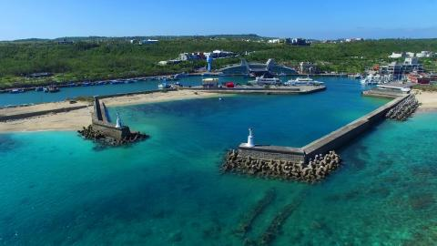

台灣
台灣景點
台北101
世界第二高的摩天大樓,設有觀景台可以遠眺整個台北市。
故宮博物院

擁有世界上最豐富的中國古代藝術品收藏,是必訪的文化重地。
中正紀念堂

紀念中華民國前總統蔣中正,是台北著名的地標建築。
士林夜市

台北最大也最著名的夜市,擁有眾多小吃攤販和民俗商品。
陽明山國家公園
擁有優美的自然風光,可以欣賞硫磺谷、草山行館等景點。
淡水老街

位於淡水河畔的古老街區,充滿復古懷舊的氛圍。
台北動物園
亞洲最大的動物園之一,展示了超過 300 種動物。
西門町商圈
繁華熱鬧的購物娛樂區,有眾多商店、餐廳和電影院。
九份老街

充滿懷舊風情的老街,保留了許多日式建築和古老商舖,是九份最有特色的地方。
金瓜石博物館
展示九份過去曾經繁華的採金歷史,可以了解這裡的金礦開採史。
黃金瀑布
位於九份後山,是一處天然瀑布景點,白色的瀑布十分壯觀。
九份山城步道
沿著山路蜿蜒而上,可以欣賞九份全景和海天一色的景色。
阿妹茶樓
九份著名的復古茶樓,有迷人的客家風味茶點。
城隍廟
九份重要的宗教場所,廟宇外觀保留了濃厚的民間風情。
文武廟
位於日月潭畔的重要宗教建築,兼具文化與自然景觀。
日月潭環潭自行車道
長達 33 公里的環湖自行車道,可欣賞湖光山色。
碧湖步道
沿著湖畔而建的步道,視野開闊,可欣賞日月潭的全景。
玄光寺
座落於山間的寺廟,供奉觀世音菩薩,殿宇浮現於白霧之中。
日月潭纜車
從山腰俯瞰整個日月潭景致,乘坐纜車十分轡適愜意。
向山遊客中心
提供日月潭各種旅遊資訊和服務,也可以欣賞全景。
阿里山森林鐵路

擁有百年歷史的小火車,沿途欣賞阿里山的山光水色。
神木群
數百年歷史的巨型神奇樹木,是阿里山的活化石。
鵝鑾鼻公園

擁有壯麗的海蝕地形和燈塔,是墾丁最具代表性的景點。
龍磐公園
集中了多處海蝕地形景觀,像是象鼻岩等奇特地貌。
後壁湖
擁有寬敞的白色沙灘和碧綠的海水,是墾丁著名的海水浴場。
小琉球

鄰近墾丁的離島,是潛水和賞鯨豚的熱門景點。
墾丁大街
集中了飯店、商店和餐廳的熱鬧商業區,是遊客必來之地。
國立台灣海洋生物博物館
展示豐富的海洋資源和生態,是了解海洋的好去處。